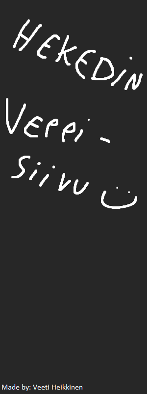
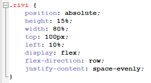

Webteknologiat - kurssin tehtävät
CSS osa 1 pääsee näkemään Tehtävä 1 & Tehtävä 2 sivuilta.

CSS osa 2.
Tällä sivulla on käytetty CSS Flexboxia.
Tehtävien 1-4 laatikot on asetettu laatikon (div) sisään, jolle on annettu display:flex; arvo,
jotta voimme käyttää flexboxin komentoja.
Alla olevasta kuvasta näemme, mitä komentoja olemme käyttäneet.
Kyseiset komennot järjestävät sisällön riviin tasaisin välein.

Tällä sivulla on käyetty myös bootstrappia.
Bootstrapin saa käyttöön linkkaamalla sen CSS tiedoston osoitteen headin sisään.
Oikeassa laidassa olevan bannerin reunat ovat pyöristetty antamalla kuvalle class="img-rounded".